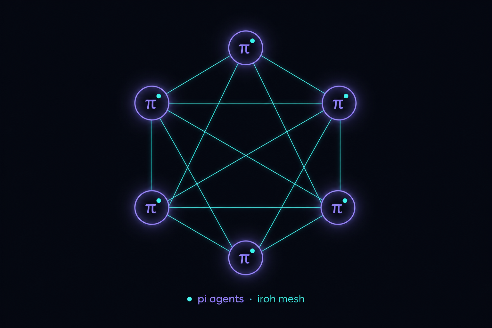
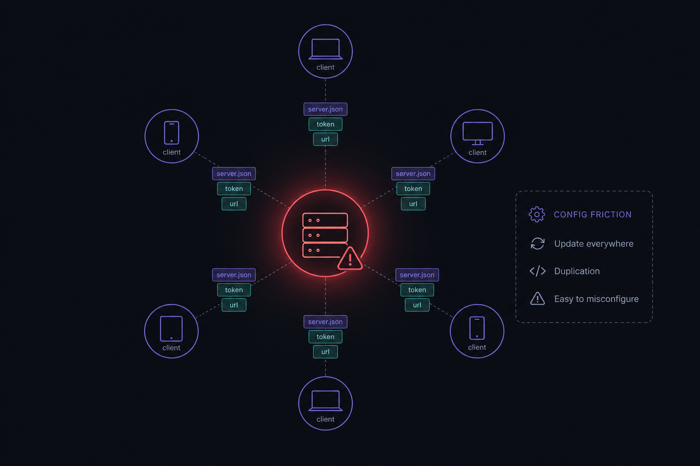
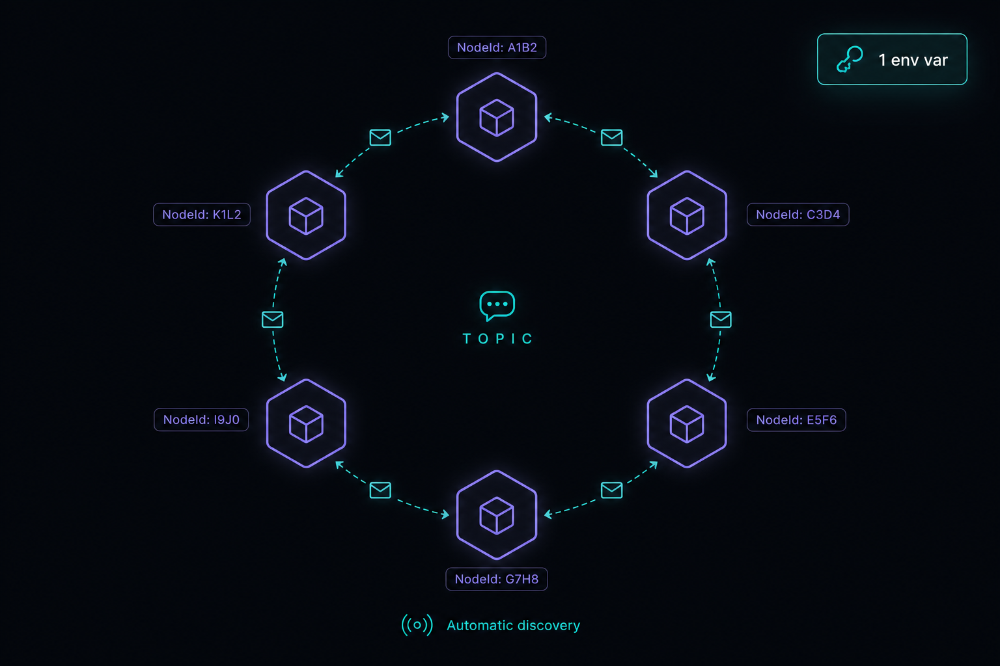
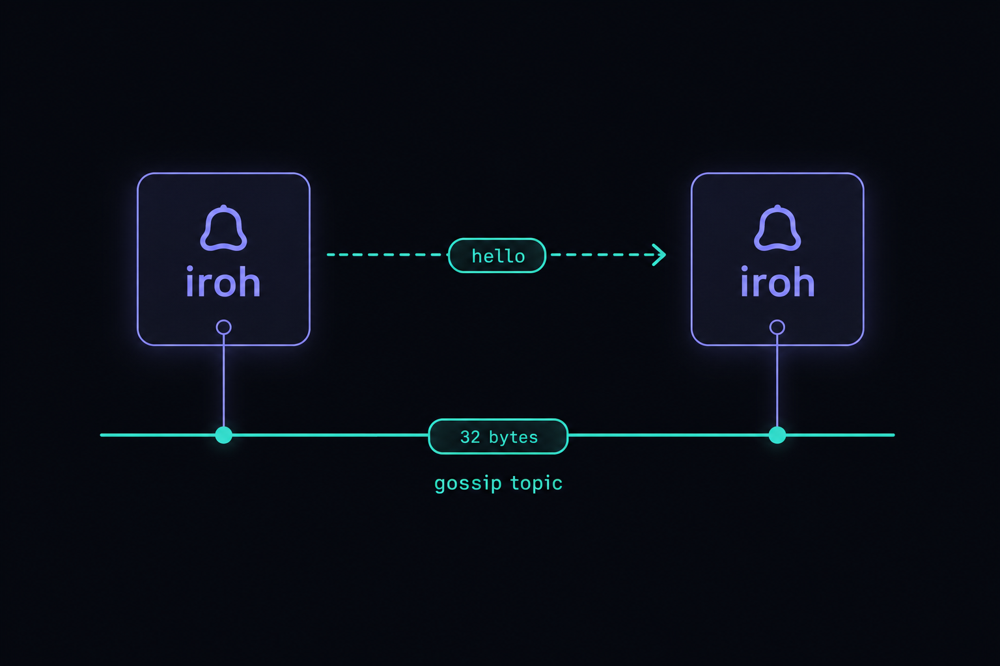
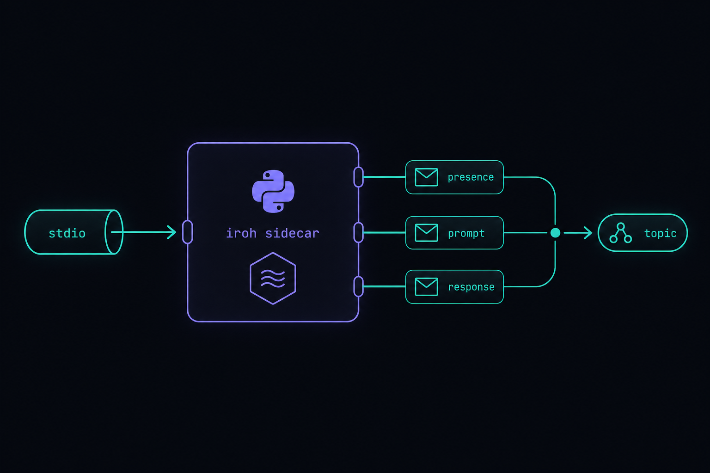
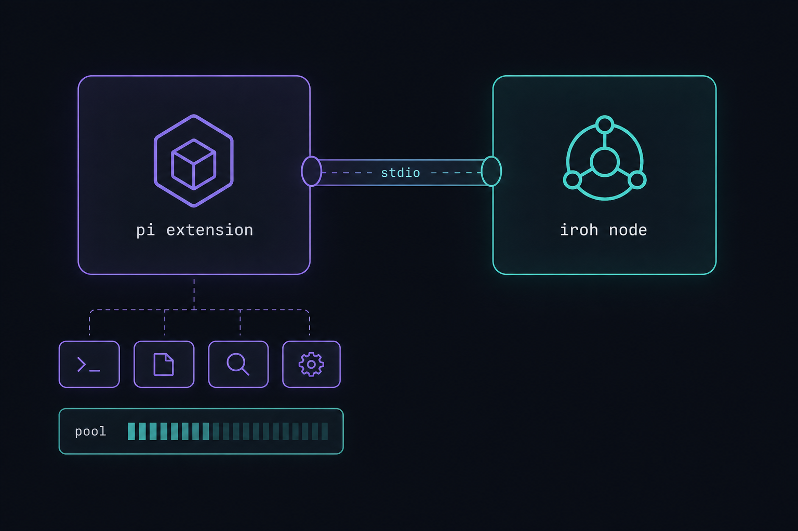
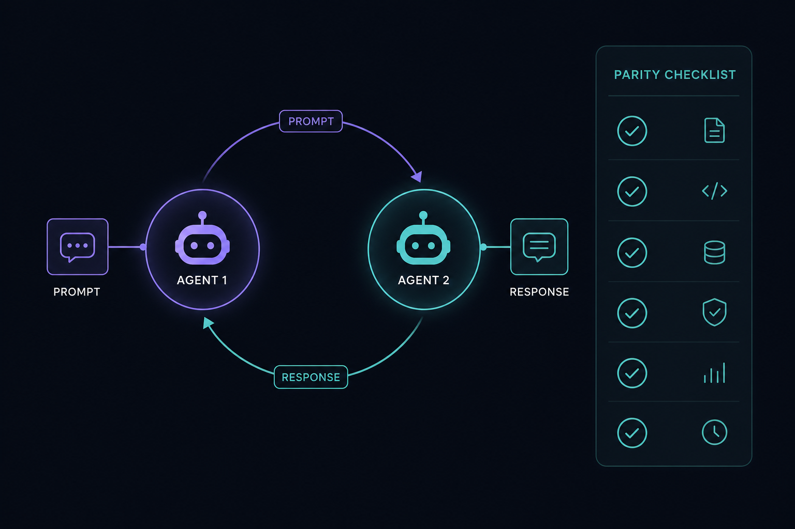
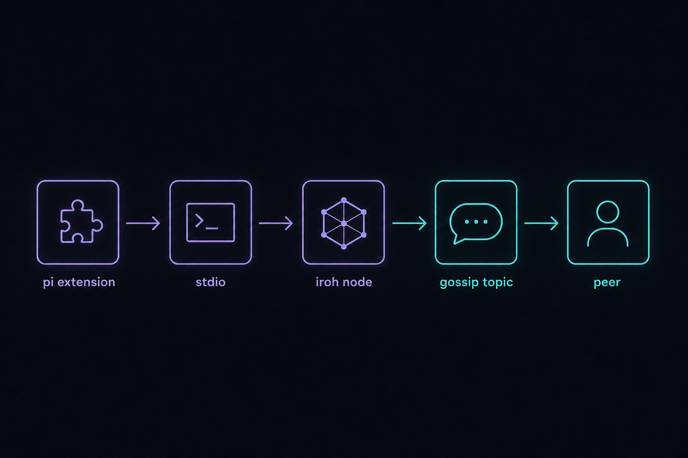

coms-net on iroh
Reimplement the pi agent communication network as a serverless, peer-to-peer-to-peer mesh on iroh — one env var, zero servers, zero tokens, full feature parity.

Purpose
Port extensions/coms-net.ts (the pi agent-to-agent communication network) off its central
Bun HTTP/SSE hub and onto iroh — a fast, secure, NAT-traversing peer-to-peer
transport — using the iroh Python SDK. The new system reaches 1:1 feature parity
with the existing tool surface (coms_net_list, coms_net_send, coms_net_get,
coms_net_await, the /coms-net command, the pool widget, heartbeats, hop limits, TTLs, and
the auto-reply-at-end-of-turn behaviour) while deleting everything that made setup multi-step: the standalone server
process, the server.json discovery file, the server.secret.json bearer token, and the
--server-url / PI_COMS_NET_SERVER_URL plumbing.
PI_COMS_NET_PROJECT, default "default") once. No agent is ever pointed at a URL, a token,
or a running resource. The only shared resources are static and derived: the gossip topic id is a
pure function of the project name, and identity is a persisted key on disk.
Problem
The current coms-net is a hub-and-spoke design. A dedicated scripts/coms-net-server.ts
Bun process holds all state and exposes a REST + Server-Sent-Events API; every pi agent is a client that must be
told where the hub is and how to authenticate. That creates real configuration friction and
operational fragility:
- Multi-step setup. Start the server → it writes
~/.pi/coms-net/projects/<project>/server.json+server.secret.json(mode 0600) → each agent reads/derives a URL + bearer token. Three moving parts before two agents can talk. - A single point of failure. If the hub dies, the whole mesh is dark; clients fall into SSE reconnect backoff (
scheduleReconnect) until it returns. - Bound to one host. The default bind is loopback
127.0.0.1; cross-machine use forces a non-loopback bind, an explicit token, and exposed ports — i.e. more config, plus your own NAT/firewall problem. - Bearer-token surface. A long-lived secret on disk that must never be logged and must be redacted from every error string (
safeError).

Solution
Replace the central hub with an iroh gossip swarm. Each pi agent embeds a tiny iroh node and subscribes to one topic derived from the project name. Presence and messaging both flow as signed, encrypted gossip messages over that topic — so the swarm itself is the hub. There is nothing to start and nothing to point at.
Because pi extensions run in TypeScript/Bun and the gossip-capable iroh bindings are Python, the design is a two-process pair per agent:
- A Python iroh sidecar (
scripts/coms_net_iroh.py) owns the iroh node, joins the topic, runs presence + messaging, and speaks newline-delimited JSON over stdio. - The TS pi extension (
extensions/coms-net-iroh.ts) keeps the exact tool/command/widget surface but spawns and owns that sidecar as a child process — so the operator does literally nothing extra.
The “static resources” that make this 1-time-config:
- topic
topic = SHA-256("pi.coms-net.v1." + project)→ a deterministic 32-byte id. Same project ⇒ same swarm, computed identically by every agent. No registry lookup. - identity a persisted 32-byte secret key at
~/.pi/coms-net-iroh/identity/<project>.key⇒ a stableNodeIdacross restarts. - rendezvous a well-known dir
~/.pi/coms-net-iroh/projects/<project>/peers/where each node drops itsNodeId; peers read it as the gossip bootstrap list. A path, not a process. - discovery iroh’s default n0 discovery (pkarr/DNS on
iroh.link+ LAN mDNS) resolvesNodeId → address, so only node ids are exchanged — NAT traversal and relay fallback are automatic.
Security gets simpler and stronger: iroh gives QUIC transport encryption and cryptographic node identity for free, so the bearer token disappears entirely. Knowledge of the project name (hence the topic) is the capability.

Relevant Files
Existing Files (reference — cloned to a tmp dir, not edited)
- existing
extensions/coms-net.ts— the client to port: identity resolution, tools, widget, slash command,agent_endauto-reply, shutdown. Surface must be reproduced 1:1. - existing
scripts/coms-net-server.ts— the hub whose semantics (register/heartbeat/list/send/get/await/response, stale & TTL scans, hop limit, inbox cap, name uniqueness) move into the peer-local sidecar. - existing
extensions/coms.ts— the v1 (Unix-socket) ancestor; source of theulid,hexFg,fallbackColor,parseFrontmatterhelpers reused verbatim by coms-net. - existing
extensions/themeMap.ts—applyExtensionDefaults(); reused unchanged by the new extension. - existing
specs/coms-net-v1.md— the canonical HTTP protocol spec; the parity checklist is derived from it.
New Files
- new
scripts/coms_net_iroh.py— the iroh sidecar: node lifecycle, topic subscribe, presence loop, message engine, stdio JSON line protocol. The heart of the port. - new
scripts/iroh_gossip_poc.py— throwaway two-node gossip proof-of-concept used in Phase 1 to validate the binding before building on it. - new
scripts/pyproject.toml— pinsiroh==0.35.0(the last release with gossip) for reproducibleuvruns. - new
extensions/coms-net-iroh.ts— the TS pi extension: spawns/owns the sidecar, bridges stdio events to the existing handlers, identical tools/command/widget. - new
extensions/coms-net-iroh.README.md— operator docs: the one env var, how discovery works, cross-machine notes, troubleshooting.
Implementation Phases
IMPORTANT: Execute every phase and task step by step, in order, top to bottom.
Status markers: [] idle · [wip] in progress · [x] complete · [f] failed. All start as []; the Build Plan workflow updates them as it works.
[] Phase 1: Foundation & iroh gossip proof-of-concept
De-risk the single hardest dependency first: confirm two iroh Python nodes can exchange gossip messages on this machine. Establish the project skeleton, pin the gossip-capable version, and lock in the static-resource primitives (topic derivation, persistent identity, peers-dir rendezvous) before any protocol work.

1. Project skeleton & pinned dependency
[]Createscripts/pyproject.tomldeclaringrequires-python >= 3.10anddependencies = ["iroh==0.35.0"](1.0 dropped gossip — see Notes/Risks).[]Verify the wheel installs on this platform:uv run --with iroh==0.35.0 python -c "import iroh; print(iroh.__file__)".[]Decide IPC = newline-delimited JSON over the sidecar’s stdin/stdout (no ports, no token — the extension owns the child).
2. Static-resource primitives
[]Implementtopic_for(project)=hashlib.sha256(f"pi.coms-net.v1.{project}".encode()).digest()(exactly 32 bytes; iroh validates length).[]Implement persistent identity: load/create 32-byte secret at~/.pi/coms-net-iroh/identity/<project>.key(mode 0600,os.urandom(32)if absent); pass viaNodeOptions.secret_keyfor a stableNodeId.[]Implement the peers-dir rendezvous: write selfNodeId/NodeAddrto~/.pi/coms-net-iroh/projects/<project>/peers/<short>.json; read sibling files → bootstrap list forsubscribe.
3. Two-node gossip PoC
[]Writescripts/iroh_gossip_poc.pymodeled on iroh-ffipython/gossip_test.py:iroh.iroh_ffi.uniffi_set_event_loop(asyncio.get_running_loop())first, twoIroh.memory()nodes, cross-seed viaadd_node_addr,gossip().subscribe(topic, [peer_id], cb), wait forMessageType.JOINED, broadcast, assertRECEIVEDwith matchingcontent+delivered_from.[]Confirm the receive model: aGossipMessageCallbacksubclass whoseasync def on_message(self, msg)pushes to anasyncio.Queue(never block in the callback).
4. Testing Strategy
Run the PoC end-to-end on this machine; a single deterministic script proves the binding, the event loop bridge, topic length, and the JOINED→broadcast→RECEIVED sequence. This is the gate for all later work.
[]uv run scripts/iroh_gossip_poc.py— exits 0 and prints the round-tripped "hello" with the sender NodeId.[]uv run python -c "import hashlib; print(len(hashlib.sha256(b'pi.coms-net.v1.default').digest()))"— prints32.
[] Phase 2: The iroh sidecar — presence + messaging engine
Build scripts/coms_net_iroh.py: a long-lived process that joins the swarm and re-implements the hub’s
semantics peer-locally. Every former HTTP route + SSE event becomes either a gossip envelope or a stdio
line to the extension.

1. Node lifecycle & envelope schema
[]Boot the node with persistedsecret_key+ default discovery; subscribe totopic_for(project)with the peers-dir bootstrap list; emit areadystdio line carrying ourNodeId.[]Define the gossip envelope:{ v, kind, from, ts, ... }wherekind ∈ {presence, presence_bye, prompt, response}; serialize as UTF-8 JSON bytes forsink.broadcast(...).[]Define the stdio line protocol — in (extension→sidecar):identity,send,list,get,await,response,shutdown; out (sidecar→extension):ready,peer_joined,peer_updated,peer_stale,peer_left,prompt,response,status,error.
2. Presence (replaces register + heartbeat + pool snapshot)
[]Broadcast apresenceenvelope (theAgentCard: name, purpose, model, color, cwd, project, explicit, started_at, context_used_pct, queue_depth, status) on join and everyHEARTBEAT_MS(default 10s).[]Maintain a localpeers: dict[NodeId, AgentCard]; on each inboundpresenceupsert + emitpeer_joined/peer_updatedto the extension (diff to suppress no-op renders, likepoolSnapshotKey).[]Run the local stale scan: no presence withinSTALE_AFTER_MS(30s) →peer_stale; withinOFFLINE_AFTER_MS(60s) → drop +peer_left. Broadcastpresence_byeon clean shutdown.
3. Messaging (send / get / await / response, hops, TTL, inbox)
[]send: resolvetarget(peer name → NodeId via the localpeersmap; ambiguous-name and not-found errors as in the server); mint a ULIDmsg_id; enforcehops < MAX_HOPS(5) and per-target inbox cap (MAX_INBOX100); broadcast apromptenvelope carryingtarget_node; reply to the extension with{ msg_id, target_node }.[]Inboundprompt: ignore unlesstarget_node == self; otherwise enqueue + emit apromptstdio line (the extension turns it into a follow-up turn). Track outbound msg_ids → pending, resolved by matchingresponse(powersget/await).[]responsefrom extension: broadcast aresponseenvelope (msg_id, payload, error) addressed back to the original sender NodeId; sender side resolves the pending entry and emitsresponse+ terminalstatus. Enforce message TTL (MESSAGE_TTL_MS30min) with a local scan →timeout.
4. Testing Strategy
Drive two sidecars directly over stdio with a Python harness (no pi involved) and assert the full message lifecycle and presence transitions — the sidecar must be correct in isolation before the TS bridge is added.
[]uv run python -m py_compile scripts/coms_net_iroh.py— sidecar compiles.[]uv run scripts/test_two_sidecars.py— spawn two sidecars, feedidentity+send, assert apromptarrives at the target and a matchingresponsereturns to the sender; assertpeer_joinedthenpeer_leftafter a kill.[]Assert hop-limit, ambiguous-target, and TTL-timeout paths each return the correctstatus/error.
[] Phase 3: The TS pi extension — identical surface, sidecar-backed
Write extensions/coms-net-iroh.ts by transplanting coms-net.ts and swapping its
HTTP/SSE transport for a spawned Python sidecar. Identity resolution, the four tools, the /coms-net
command, the pool widget, and the agent_end auto-reply stay behaviourally identical.

1. Sidecar process management (replaces SSE connection)
[]Onsession_start, resolve identity exactly as before (CLI--cname/--purpose/--project/--color/--explicit> frontmatter > defaults) and spawnuv run scripts/coms_net_iroh.pyas a child; send theidentityline.[]Parse the sidecar’s newline-JSON stdout; route each event to the existing handlers (peer_*→peerCards+ widget;prompt→handleInboundPrompt;response/status→handleInboundResponse).[]Respawn-with-backoff if the child exits unexpectedly (mirrorscheduleReconnect’s 500ms→10s backoff + the ceiling notify); drop--server-url/--auth-tokenflags and all token/redaction code.
2. Tools, command, widget, auto-reply (parity)
[]Reimplementcoms_net_list(sidecarlist),coms_net_send(send→ returnsmsg_id),coms_net_get(non-blocking poll of pending),coms_net_await(block on the pending promise /awaitwith timeout) — same descriptions, params, andrenderCall/renderResult.[]Reinstall thecoms-net-poolbelowEditor widget (renderPoolunchanged) and the/coms-netcommand (--alltoggle explicit,--reconnect→ respawn sidecar,--projectfilter, bare → refresh; replace--serverhealth with--nodeshowing ourNodeId+ peer count).[]Keepagent_endauto-reply: capture the last assistant text, JSON-parse when aresponse_schemawas attached, send aresponseline for the open inboundmsg_id; keep the audit log channelcoms-net-logand thecoms-netstatus key.
3. Testing Strategy
Validate inside real pi sessions: two agents in the same project must list each other and complete a send→reply round-trip with the operator setting nothing but (optionally) PI_COMS_NET_PROJECT.
[]bun build extensions/coms-net-iroh.ts --target node(ortsc --noEmit) — extension type-checks/builds.[]Launch twopi -e extensions/coms-net-iroh.ts --cname planner/--cname worker; confirm each appears in the other’s pool widget andcoms_net_listwith zero URL/token config.[]Fromplanner,coms_net_sendtoworker+coms_net_await; confirmworker’s end-of-turn text returns as the reply.
[] Phase 4: Parity verification, resilience & docs
Prove 1:1 parity against the original, harden the failure modes that change when the substrate becomes p2p, and write the operator docs that make the one-step promise real.

1. Parity matrix & resilience
[]Walk the parity matrix below; for every original capability confirm an equivalent exists or is consciously dropped with rationale.[]Resilience: kill a peer mid-conversation → sender seestimeoutat TTL; kill+restart the sidecar → stableNodeId(persisted key) and auto-rejoin; offline-then-online peer reappears via presence.[]Confirm the deny-by-default posture: an agent in projectAnever sees or is addressable by projectB(different topic).
2. Documentation & cross-machine notes
[]Writeextensions/coms-net-iroh.README.md: the single env var, how the topic/identity/peers-dir work, the optionalPI_COMS_NET_IROH_BOOTSTRAP(comma-sep NodeIds) escape hatch for cross-machine swarms, and troubleshooting (no peers → check discovery/topic).[]Document all env knobs and their defaults (PI_COMS_NET_PROJECT,*_HEARTBEAT_MS,*_MAX_HOPS,*_MESSAGE_TTL_MS,*_STALE_AFTER_MS,*_OFFLINE_AFTER_MS,*_MAX_INBOX) — same names/semantics as the server, minus URL/TOKEN.
3. Testing Strategy
Final acceptance: a clean-machine run with no prior state reaches a working two-agent conversation using only the default project, and the parity matrix is fully accounted for.
[]Fresh-state run: delete~/.pi/coms-net-iroh/, launch two agents with no env vars, confirm discovery → list → round-trip.[]Three-agent relay (peer-to-peer-to-peer): A→B→C forwarding incrementshopsand the chain halts atMAX_HOPS.
Validation Commands
Execute these commands to validate the entire plan is complete:
[]uv run scripts/iroh_gossip_poc.py— the iroh gossip primitive round-trips on this machine.[]uv run python -m py_compile scripts/coms_net_iroh.py— the sidecar compiles cleanly.[]uv run scripts/test_two_sidecars.py— full send→prompt→response lifecycle + presence join/leave pass at the sidecar layer.[]tsc --noEmit -p extensions(orbun build extensions/coms-net-iroh.ts) — the extension type-checks.[]Two livepi -e extensions/coms-net-iroh.tsagents in the default project list each other and complete acoms_net_send/coms_net_awaitround-trip with no URL/token configuration.[]Fresh-state run (no~/.pi/coms-net-iroh/, no env vars) reaches a working conversation — proves 1-step / 1-time config.
Notes
Feature-parity matrix (original → iroh)
| Original (HTTP/SSE hub) | iroh port | Status |
|---|---|---|
POST /v1/agents/register + name uniqueness | First presence broadcast; names deduped locally for display (NodeId is the true key) | parity |
POST /v1/agents/:id/heartbeat | Periodic presence re-broadcast (same HEARTBEAT_MS) | parity |
GET /v1/agents (+ include_explicit) | Local peers map snapshot; explicit hidden unless requested | parity |
SSE pool_snapshot/agent_joined/updated/stale/left | presence/presence_bye + local stale scan → peer_* stdio events | parity |
POST /v1/messages (send, hops, inbox cap) | prompt envelope addressed to target_node; hop + inbox checks peer-local | parity |
GET /v1/messages/:id / /await | Pending-reply map resolved by matching response envelope; get=poll, await=block+timeout | parity |
POST /v1/messages/:id/response | response envelope back to sender NodeId; agent_end auto-submit unchanged | parity |
| Stale/TTL scan loops on server | Identical loops run inside each sidecar (state is peer-local) | parity |
Bearer token + server.secret.json + redaction | Dropped — QUIC encryption + NodeId auth are intrinsic; topic name is the capability | simplified |
server.json discovery + --server-url | Dropped — topic derived from project; discovery by NodeId via n0/mDNS | simplified |
Central scripts/coms-net-server.ts process | Dropped — no central process; per-agent sidecar joins the swarm | simplified |
End-to-end data flow

Reference: the proven gossip primitive (iroh-ffi 0.35)
# the load-bearing lines, verbatim from iroh-ffi python/gossip_test.py
iroh.iroh_ffi.uniffi_set_event_loop(asyncio.get_running_loop()) # MUST be first
class Callback(GossipMessageCallback):
async def on_message(self, msg):
await self.chan.put(msg) # never block here
topic = hashlib.sha256(b"pi.coms-net.v1.default").digest() # 32 bytes
sink = await node.gossip().subscribe(topic, [peer_id], cb)
await sink.broadcast(b'{"kind":"presence",...}')
# inbound: event.type()==MessageType.RECEIVED -> event.as_received().content / .delivered_fromDependencies & tooling
- Python:
iroh==0.35.0viauv(PEP-723 inline metadata orscripts/pyproject.toml). No Rust toolchain needed — prebuilt wheels ship for macOS arm64/x86_64, manylinux, win amd64. - TS/Bun: reuses
@mariozechner/pi-coding-agent,@mariozechner/pi-tui,@sinclair/typebox— same imports ascoms-net.ts; no new TS deps. - Process model: the extension spawns the sidecar with the project workspace’s
uv; sidecar stderr is surfaced to the audit log for debugging.
iroh==0.35.0, which is feature-frozen. Mitigation / fallback: if forced to 1.0, reimplement pubsub over raw Endpoint QUIC streams (the peers-dir already gives the member list), or build custom bindings to the Rust iroh-gossip crate. Keep the envelope schema transport-agnostic so the substrate can swap without touching the extension.
- Broadcast-and-filter vs unicast. Prompts go to the whole topic and non-targets ignore them — simplest, fine for the small per-project swarms pi uses. If swarms grow, switch directed messages to a unicast iroh QUIC connection keyed by NodeId; presence stays gossip.
- Cross-machine bootstrap. The peers-dir rendezvous assumes a shared filesystem (the common single-machine multi-agent case). Cross-machine relies on the optional
PI_COMS_NET_IROH_BOOTSTRAPenv (one known NodeId is enough; gossip + n0 discovery handle the rest). - Private swarms. Optionally fold a shared passphrase into the topic hash (
sha256("pi.coms-net.v1." + project + ":" + secret)) so the project name alone is not the capability — still 1-time config (one extra env var).
Amendments
— no amendments yet
Running history of post-execution changes will be appended here (newest at the bottom) by the Update Plan / Update References workflows.